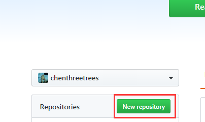
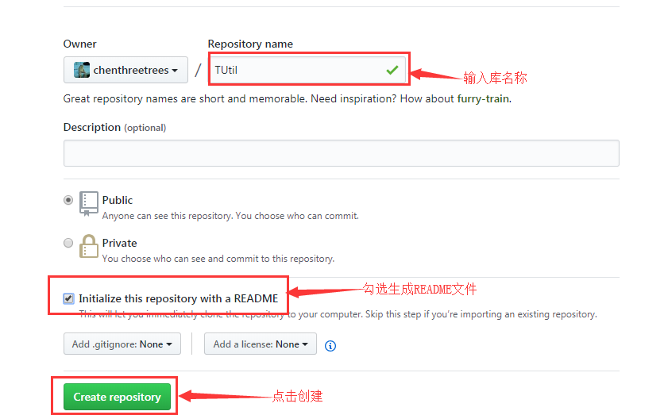
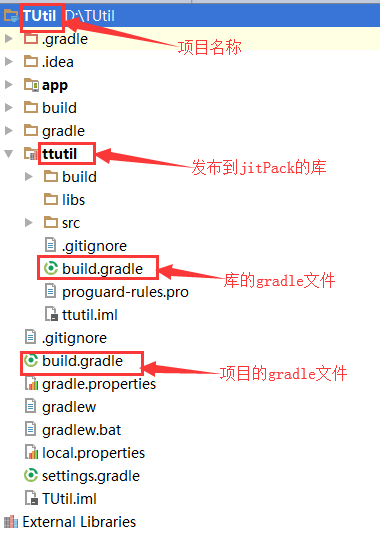
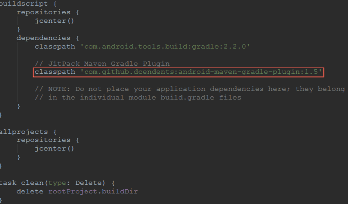
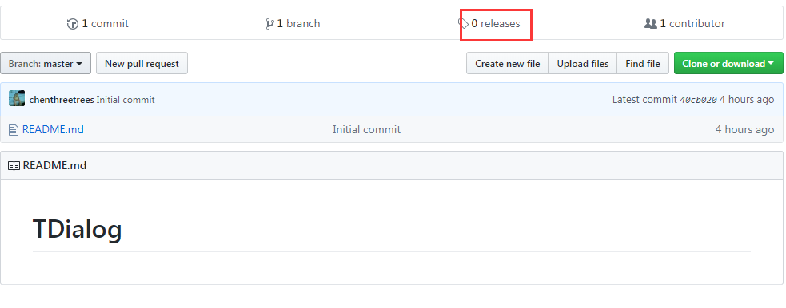
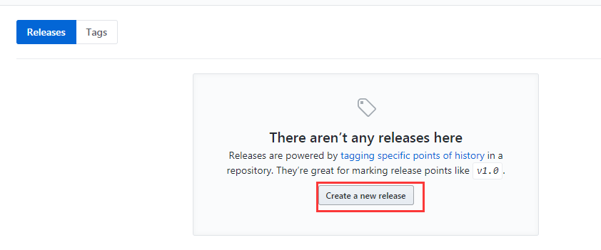
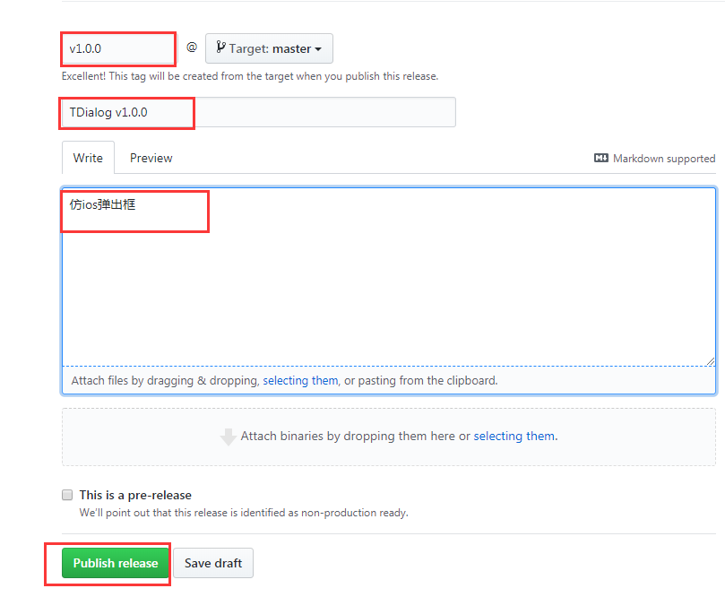
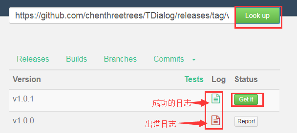

在Android Studio中通过Gradle可以很方便的引用依赖库，
这里记录下我们开发过程中发布自己的开源库到jitPack。
创建github库


把库克隆到本地 git clone https://github.com/chenthreetrees/TUtil.git
创建项目
在上面克隆下来的根目录下创建项目

注意：上传到JitPack的开源库默认使用项目的名称，
而不是要发布的开源库的名称，所以尽量给项目起一个比较优雅的名字。
使用插件android-maven-gradle-plugin
在项目的build.gradle添加classpath 'com.github.dcendents:android-maven-gradle-plugin:1.5' 如下图：

在要上传的library的build.gralde文件添加如下代码：
1
2
3
4// JitPack Maven
apply plugin: 'com.github.dcendents.android-maven'
// Your Group
group='com.github.username'
其中username需要替换为你在github上的用户名
开始编写代码
上传项目到github
1 | git add . |
这里需要输入github的帐号和密码
创建发布版本



提交至jitPack
打开jitPack官网
将要提交的版本的url填进去，如下图：

项目中引用
1 | allprojects { |
1 | dependencies { |